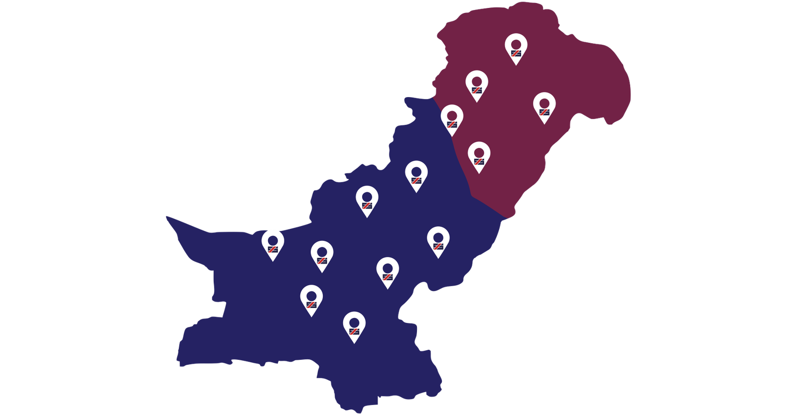

Experienced sales & marketing teams and a nationwide distribution network — the cornerstone of Symans' success in Pakistan.
Sales & Marketing
Under the umbrella of Symans, a set of experienced, well qualified and result oriented sales & marketing teams have been established. The purpose of each team is to educate, promote, sell and market their designated range of products and achieve annual sales targets. Currently, the different marketing teams of Symans are not only responsible for marketing products manufactured by Symans Pharmaceuticals Pvt. Ltd., but also liaison with different well reputed brands with a large variety of products in the veterinary healthcare market. The nationwide sales and distribution network is the cornerstone of our success in selling Symans Pharmaceuticals and its affiliated brand's products. Furthermore, the dominance in wholesale and retail segment of the market by Pakistan Medicos also plays a pivotal role in ensuring success of Symans and its affiliates.

Symans has a substantial nationwide network of distributors, stockists, wholesalers and retailers.
We have warehouses in multiple locations within Lahore, the second biggest city of Pakistan.
One of the largest and oldest wholesale and retail veterinary healthcare businesses in Pakistan, and a pivotal part of the Symans group's market strength.
25-B, Shahrah-e-Pakistan, Lower Mall, Lahore
Phone: (042) 37234138 · 37248221
Fax: (042) 37234139
(As listed in public business directories.)
Partner With Symans
Whether you are a distributor, a veterinary professional, a business partner or an international export enquirer, our team is ready to assist you with product information, partnership opportunities and support.